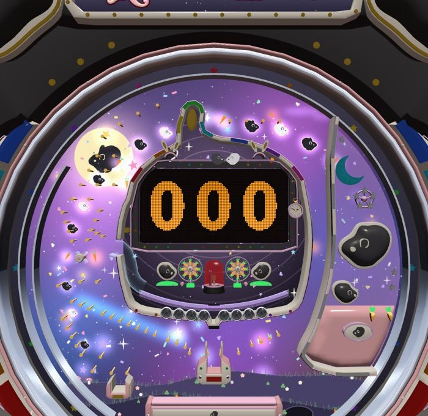
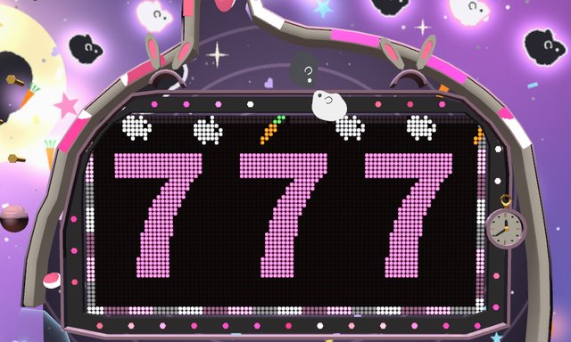
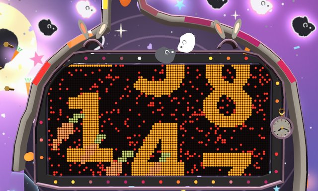
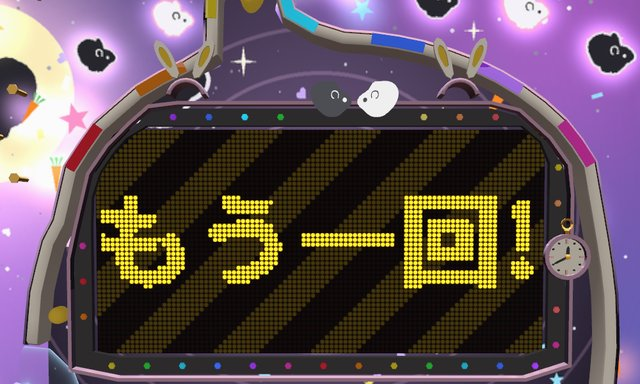

最終更新：2026-11-26（木）
RABBIT HOLE

当たりがすべてST10回に入るST機。左打ちのみ。島の東の端に表と裏2台ずつ、4台。
スペック
| 大当り確率 | 1/99.0 |
|---|---|
| ST中 | 1/9.0 |
| ST | 10回（当たりはすべてST） |
| 継続率 | 約69% |
| ラウンド | 8R・3R（1R10カウント） |
| 出玉 | 8R約880個・3R約330個 |
| 賞球 | ヘソ3・電チュー3・アタッカー11・入賞口4 |
| 機械割 | 約141%（試算） |
※ボーダーは調査中。
大当り振り分け
| 入賞口 | 8R（ST） | 3R（ST） |
|---|---|---|
| ヘソ | 15% | 85% |
| 電チュー | 25% | 75% |
打ち方
- ずっと左打ち。盤面の右側は装飾で、右打ちは無い
- ヘソが電チューを兼ねていて、耳の形の羽根が開くと入りやすい
- スルーゲートは無い。打った玉の55%が普図の保留になる
| 通常 | ST中 | |
|---|---|---|
| 普図の当たり | 1/16 | 9/10 |
| 普図の変動 | 12秒 | 0.6秒 |
| 羽根の開放 | 0.15秒×1回 | 4.0秒×2回 |
盤面と役物
表示の上にうさ耳と、回る黒と白のうさぎ。表示の下ににんじん風車とパトランプ。


ST（ラビットRUSH）
- 当たりのあとはST10回（1/9.0）。10回のうちに当たればまたST、外せば通常に戻る
- 入る時に「ラビットRUSH!」が出る
- ST中は液晶の縁を桃と白の光が回り、上の辺に残り回数。残り5回からカウントダウン


演出信頼度
※信頼度は解析値（通常時）。50%以上と確定は赤字。
保留の色
| 色 | 信頼度 |
|---|---|
| 青 | 1.7% |
| 緑 | 6.8% |
| 赤 | 30.5% |
| 金 | 63.6% |
| 虹 | 確定 |
リーチ
| 演出 | 信頼度 |
|---|---|
| ノーマルリーチ | 3.1% |
| スーパーリーチ | 25.0% |
| 全回転 | 確定 |
| 最終決戦（PUSH） | 51.0% |
予告
| 色 | ニンジン風船予告 | うさぎの群れ予告 |
|---|---|---|
| 全体（色を問わず） | 1.3% | 18.0% |
| 白 | 0.2% | 3.4% |
| 青 | 0.6% | 9.9% |
| 緑 | 1.7% | 22.7% |
| 赤 | 6.1% | 52.3% |
| 金 | 22.9% | 83.5% |
| 虹 | 確定 | 確定 |
ステップアップ予告
| 演出 | 信頼度 |
|---|---|
| ステップ1まで | 4.2% |
| ステップ2まで | 10.3% |
| ステップ3まで | 33.8% |
| ステップ4まで | 66.7% |
| ステップ5まで | 91.0% |
擬似連
| 演出 | 信頼度 |
|---|---|
| ×2 | 5.8% |
| ×3 | 28.5% |
| ×4 | 50.8% |
変動開始
| 演出 | 信頼度 |
|---|---|
| ため | 1.5% |
| 逆回転 | 3.9% |
| ふるえ | 13.0% |
| 1つずつ | 22.6% |
| フラッシュ | 48.6% |
| 落下 | 1.8% |
| 吸い込み | 2.1% |
| 右から | 10.6% |
| キャラが押す | 41.1% |
数字の回り方
| 演出 | 信頼度 |
|---|---|
| 逆さ | 1.3% |
| めくり | 5.6% |
| ドラム | 8.3% |
| シャッフル | 15.6% |
| ぴょん | 0.7% |
予兆（上を走るキャラ）
| 演出 | 信頼度 |
|---|---|
| なかま（3匹） | 1.1% |
| 大行進（6匹） | 2.5% |
| 金 | 12.6% |
| 虹 | 65.6% |
リーチ中の予告
| 演出 | 信頼度 |
|---|---|
| ニンジン風船予告 | 14.5% |
| うさぎの群れ予告 | 29.8% |
スーパーリーチの後半
| 演出 | 信頼度 |
|---|---|
| コマ送り | 10.9% |
| 塗り替え | 19.5% |
| 押し合い | 47.4% |
| アタック | 35.2% |
| 追っかけ | 26.9% |
| ドリル | 62.3% |
| カウントダウン | 15.1% |
ノーマルリーチの見せ方
| 演出 | 信頼度 |
|---|---|
| 標準 | 2.3% |
| 拡大 | 3.9% |
| 逆回転 | 3.1% |
| バウンド | 3.5% |
リーチの終わり方
| 演出 | 信頼度 |
|---|---|
| ピタ | 6.4% |
| すべり | 18.5% |
| 戻り | 21.4% |
| ゆらゆら | 9.2% |
| ビタ止まり | 29.0% |
チャンス目
| 演出 | 信頼度 |
|---|---|
| 311（先の保留が当たり） | 68.7% |
確定演出
虹の保留・ブラックアウト・変動開始時のパトランプ・復活・フリーズ・全消灯・うさぎの後ずさり
うさぎの後ずさりは、ノーマルリーチ中に上の帯のうさぎが後ろ向きに歩く演出。
演出解説
数字
数字は桃のぷっくりした字。いつもの回り方は「ぴょん」で、数字が跳ねて入れかわる。
保留
保留ランプは表示の下。金から激アツ、虹は確定。

予告
ニンジン風船予告は弱め、うさぎの群れ予告は熱め。色は6段で、群れの赤から激アツ、虹は確定。




ステップアップ
上の帯のうさぎが1匹ずつ増える。4段目はシャッター、5段目は数字が虹色になる。


擬似連
連番で止まり、ためのあと「もう一回!」で再変動。字の色は緑・赤・金と上がる。



スーパーリーチの流れ


最終決戦とPUSH
最終決戦はドット表示の前に出るPUSHのボタンを押す。


プレミア・隠し要素・小ネタ
※ネタバレあり。押すと開く
プレミア（当たり確定）
| 演出 | 内容 |
|---|---|
| うさぎの後ずさり | ノーマルリーチ中、上の帯のうさぎが後ろ向きに歩く |
| ブラックアウト | 変動開始時に長く暗転し、そのまま全回転へ |
| フリーズ | 変動開始と同時に全部が止まって音が消え、光ってそのまま全回転へ |
| 全消灯 | 液晶と台の電飾が全部消えて音もなくなり、光ってそのまま全回転へ |
| 変動開始時のパトランプ | 回転の頭でパトランプが回る |
| 虹 | 虹保留・虹の予告（ニンジン風船・うさぎの群れ） |
| 全回転 | ブラックアウト・フリーズ・全消灯のあとにだけ出る。333か777でそろう。最後まで回って虹のまま止まる |
| 復活 | スーパーではずれに見せてから当たる |


隠し要素
- 8R昇格：3Rの当たりの終わりに「昇格チャンス」が出て、3Rと8Rが入れかわるルーレットが回る。8Rで止まれば昇格。8Rの60%は3Rに見せてから昇格し、本当の3Rの25%は昇格に挑んで失敗する
- 保留の先読み：保留は入った時に本当の色より1〜2段下で見えることがある。待っている間に1段ずつ上がり、上がりきらない分は変動開始時のチャンスアップで上がる。変動開始時に白い保留がちらつくだけならガセ
- チャンスゾーン：先読みのゾーン。前に保留が2つ以上ある時に出る。はずれの時はスーパーリーチになる回だけ
小ネタ
- チャンス目311：リーチなしのはずれで311に止まると金色に光って跳ねる。たまたま311で止まることはない
- ST中は予告・ステップアップ・擬似連・変動開始が出ない
データカウンター

台の上に大当り・連チャン・スタート・前回の4つと店内の人数。